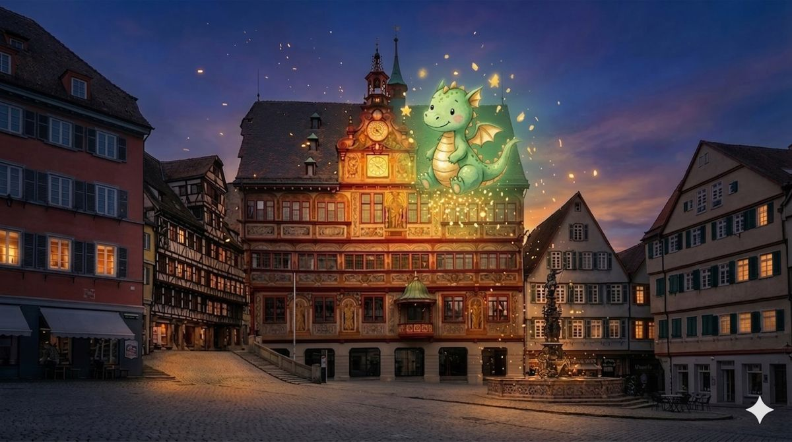

-
2Touren: Krimi & Kinder
-
60–120Minuten zu Fuß
-
0Apps zu installieren
-
ab 7,99 €einmalig, kein Abo
Unsere Touren
Zwei Abenteuer, eine Stadt: ein Krimi für Erwachsene und eine Drachenjagd für Kinder. Beide startest du, wann du willst – ganz ohne Termin und Gästeführer.
Die Formel des Forschers
Ein Wissenschaftler auf der Flucht. Eine Formel, zu gefährlich für die Mächtigen. 17 Stationen vom Schloss bis zum Neckar – findest du alle Fragmente, bevor es zu spät ist?
- 17 Stationen
- ca. 120 Min
- Start am Schloss
- Deutsch & Englisch
Die Story
"Eine Formel, die die Welt verändern könnte. Ein Forscher, der vor den Gendarmen des Königs flieht. 17 Orte in Tübingen bewahren sein Geheimnis seit 1869 – findest du alle Fragmente?"
Was dich erwartet
- Professionelle Audio-Erzählung mit 4 Stimmen
- Rätsel an echten Schauplätzen
- 8 Formel-Fragmente entschlüsseln
- Smarter Begleiter „Trace" hilft bei Rätseln
- Persönliche Urkunde mit deinem Ermittlerrang
- Läuft im Handy-Browser – ohne App-Installation
- Vorab laden, unterwegs offline spielen

Tübis Geheimnisse
Tübi der Drache hat seine Flamme verloren! Sie ist in 8 Funken zersprungen und quer durch Tübingen geflogen. Hilf ihm, alle Funken wiederzufinden – mit Rätseln, Aufgaben und einer magischen Schatzkarte!
- 8 Stationen
- ca. 60–90 Min
- Start am Marktplatz
- Alter: 5–10 Jahre
Die Story
"Hilfe!! Ich habe so doll geniest, dass meine Drachenflamme zersprungen ist! 8 Funken sind quer durch Tübingen geflogen. Ohne meine Flamme kann ich nicht fliegen! Hilfst du mir?"
Was euch erwartet
- Tübi der Drache erzählt die Geschichte
- Kindgerechte Rätsel & Aufgaben vor Ort
- Selfie-Kamera mit Tübi-Sticker
- Interaktive Schatzkarte
- Drachenzertifikat mit Rang
- Kein Kind wird blockiert – jeder schafft es!
So funktioniert's
In drei Schritten zum Ermittler
-
1. Ticket holen
Dein Zugangscode kommt sofort per E-Mail und ist 12 Monate einlösbar. Du kannst also in Ruhe auf gutes Wetter warten.
-
2. Losgehen
Am Startpunkt Code eingeben, Kopfhörer rein. Die Karte im Handy führt dich von Station zu Station – ab dem Start hast du 48 Stunden Zeit.
-
3. Rätsel lösen
Jede Station hat eine Aufgabe, die man nur vor Ort lösen kann. Wer hängt, bekommt Tipps – und am Ende eine Urkunde zum Teilen.
Über TraceTour
TraceTour macht aus einem Stadtspaziergang ein Abenteuer: eine Geschichte im Ohr, Rätsel an echten Orten – und am Ende kennst du die Stadt besser als mancher, der dort wohnt. Tübingen ist die erste Stadt, weitere sind in Arbeit.
Jede Route wird gründlich recherchiert und vor Ort geprüft. Orte, Jahreszahlen und Anekdoten sind echt – erfunden sind nur die Heldinnen und Helden unserer Geschichten.
info@tracetour.deUnser Ziel: Dass du nach der Tour sagst: „Da bin ich schon hundertmal vorbeigelaufen – und hab das nie gesehen.“
Dein Ticket zum Abenteuer
Einmal zahlen, kein Abo. Der Code kommt sofort per E-Mail und ist 12 Monate einlösbar – ab dem ersten Start hast du 48 Stunden Zeit.
Der Ticketverkauf startet in Kürze. Tipp auf „Erinnere mich“, dann sagen wir dir Bescheid.
Solo-Ermittler
pro Person
- Komplette Tour (17 Stationen, ~120 Min)
- Professionelle Audio-Erzählung
- 8 Rätsel + Formel-Puzzle + Quiz
- KI-Assistent "Trace"
- Persönliche Urkunde mit Rang
Kindertour mit Tübi 🐉
pro Familie (1 Gerät)
- 8 Stationen mit Drache Tübi (60–90 Min)
- Kindgerechte Audio-Story (5–10 Jahre)
- Rätsel, Funken sammeln & Mitmach-Aufgaben
- Selfie-Kamera mit Tübi-Sticker
- Drachenkind-Urkunde zum Abschluss
Ermittler-Team
pro Person · 3–7 Personen
- Alles aus dem Solo-Ticket
- Gemeinsam rätseln, zusammen punkten
- Perfekt für Paare, Familien & Freunde
- 20% Ersparnis pro Person
- Ideal als Geschenk oder Teambuilding
Schulklasse
pauschal · bis 30 Personen
- Alles aus dem Solo-Ticket
- Bis zu 30 Schüler mit einem Code
- Bildungsplanbezug: Stadtgeschichte erleben
- Ab 2,67 € pro Schüler
- Perfekt für Wandertag oder Projekttag
Alle Preise sind Endpreise. Gemäß § 19 UStG wird keine Umsatzsteuer berechnet.
Sichere Bezahlung über Stripe, z. B. mit Kreditkarte, Apple Pay oder Google Pay. Dein Code kommt sofort per E-Mail.
Häufige Fragen
Alles, was du vor deiner ersten Mission wissen willst
Brauche ich eine App?
Nein. TraceTour läuft direkt im Browser deines Smartphones – ohne App-Download und ohne Anmeldung. Code eingeben und losspielen.
Wo startet die Tour – und wo endet sie?
Der Krimi beginnt oben am Schloss Hohentübingen und führt bergab durch die Altstadt bis zum Neckar. Die Kindertour startet am Marktplatz vor dem Rathaus und endet am Froschkönig-Brunnen. Du legst los, wann du willst – ganz ohne Termin.
Was brauche ich für die Tour?
Ein Smartphone mit Internet, GPS und Browser – und am besten einen vollen Akku. Kopfhörer machen das Audio-Erlebnis noch intensiver, es geht aber auch ohne.
Wie bekomme ich meinen Zugangscode?
Direkt nach der Bezahlung: Der Code steht auf der Bestätigungsseite und kommt zusätzlich per E-Mail. Bezahlt wird sicher über Stripe, z. B. mit Kreditkarte, Apple Pay oder Google Pay.
Wie lange ist mein Code gültig?
Du kannst deinen Code bis zu 12 Monate nach dem Kauf einlösen. Ab dem Tour-Start hast du dann ein 48-Stunden-Fenster, in dem du beliebig oft spielen kannst – genug für ein ganzes Wochenende in Tübingen.
Und wenn es regnet?
Dann wartest du einfach auf einen schöneren Tag: Die 48 Stunden laufen erst ab dem ersten Start, und einlösbar ist der Code ein ganzes Jahr. Fängt es unterwegs an zu regnen, ist dein Spielstand gespeichert – ihr macht später einfach weiter.
Wir sind eine Gruppe – wie funktioniert das?
Bucht das Team-Ticket für eure Gruppengröße (3–7 Personen). Ihr bekommt einen gemeinsamen Code. Am schönsten spielt ihr mit einem Handy und einem kleinen Bluetooth-Lautsprecher, dann hören alle mit und rätseln zusammen. Der Code lässt sich aber auch auf mehreren Handys öffnen (bis zu 4).
Kann ich die Tour verschenken?
Ja, gern sogar. Der Code ist 12 Monate einlösbar – leite die Mail einfach weiter oder schreib den Code auf eine Karte. Die 48 Stunden beginnen erst, wenn die Beschenkten wirklich losgehen.
Für wen ist die Kindertour geeignet?
Für Kinder von 5 bis 10 Jahren in Begleitung eines Erwachsenen. Drache Tübi führt in 60–90 Minuten durch 8 Stationen der Altstadt. Kein Kind bleibt hängen: Jede Antwort bringt einen Funken.
Gibt es die Touren auch auf Englisch?
Der Krimi „Die Formel des Forschers“ ist komplett auf Deutsch und Englisch spielbar – Texte und Audios. Die Kindertour gibt es bisher nur auf Deutsch.
Wie anstrengend ist der Weg? Geht das mit Kinderwagen?
Tübingens Altstadt ist hügelig und hat viel Kopfsteinpflaster – bequeme Schuhe helfen. Der Krimi führt vom Schloss überwiegend bergab. Wo die Route eine Abkürzung über Treppen nimmt, nennt die App einen Weg ohne Stufen, zum Beispiel für Kinderwagen.
Funktioniert die Tour auch offline?
Ja. Lade die Tour vorab im WLAN herunter (Krimi ca. 50 MB, Kindertour ca. 10 MB), dann laufen Texte, Audios und Rätsel auch ohne Internet. Nur die einmalige Code-Aktivierung braucht kurz Netz – und der Kartenhintergrund lädt online nach.
Kann ich die Tour unterbrechen?
Jederzeit. Dein Spielstand wird automatisch gespeichert – mach eine Pause im Café und spiel innerhalb deines 48-Stunden-Fensters genau dort weiter, wo du warst.
Was ist echt, was erfunden?
Alle Orte, Jahreszahlen und Anekdoten sind recherchiert. Erfunden sind Professor Heinrich von Calw, seine Formel – und Drache Tübi. Ob Tübi wirklich hinter der Rathausuhr wohnt, können wir weder bestätigen noch dementieren.
Was passiert bei technischen Problemen?
Wenn eine technische Störung die Tour unmöglich macht, erstatten wir den Kaufpreis. Schreib uns einfach an info@tracetour.de – wir melden uns schnell.
Weitere Städte
Tübingen ist erst der Anfang. Diese Touren und Städte sind in Arbeit:
Welche Stadt soll als Nächstes ein Spielfeld werden? Schreib uns deine Wunschstadt.
BEREIT FÜR DIE
ERSTE MISSION?
Handy, Kopfhörer, bequeme Schuhe – mehr brauchst du nicht.